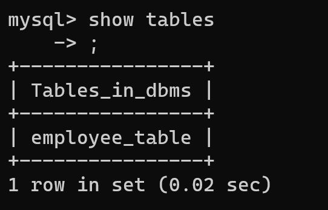
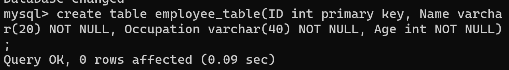
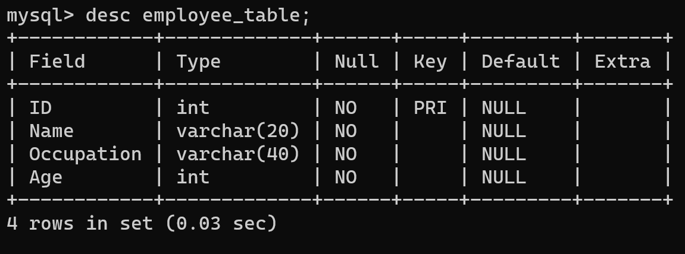

Show Table
Show table command in sql is used to dispaly all the tables present in the database.

Create Table
A table is used to organize data in the form of rows and columns and used for both storing and displaying records in the structure format. It is similar to worksheets in the spreadsheet application.

Describe Table
The desc is the short form of DESCRIBE command and used to display the information about a table like column names and constraints on column name.
